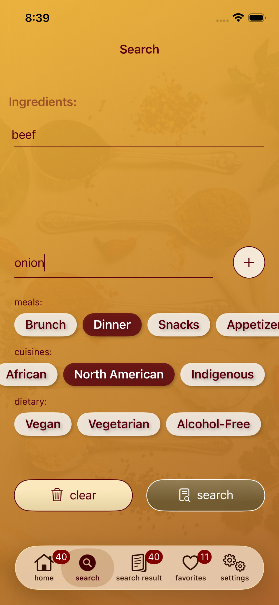
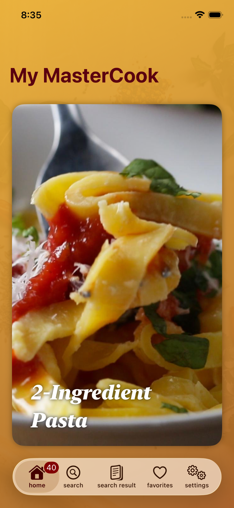
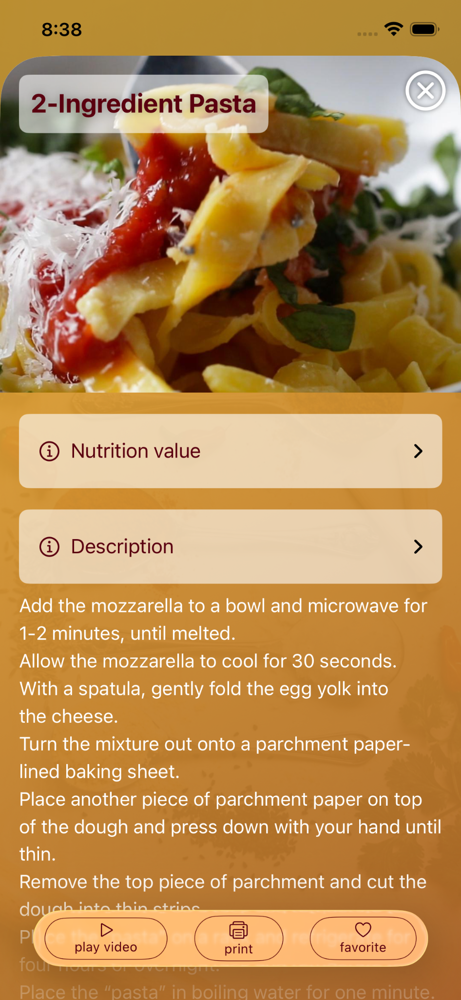
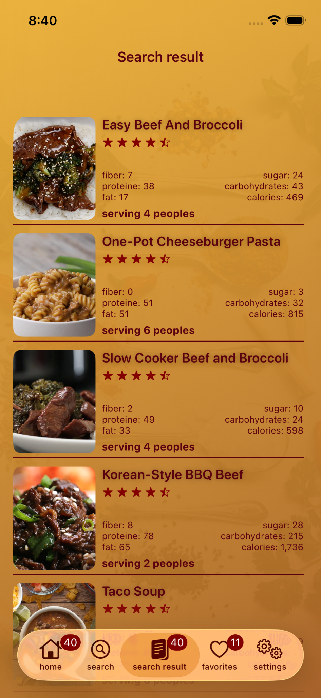
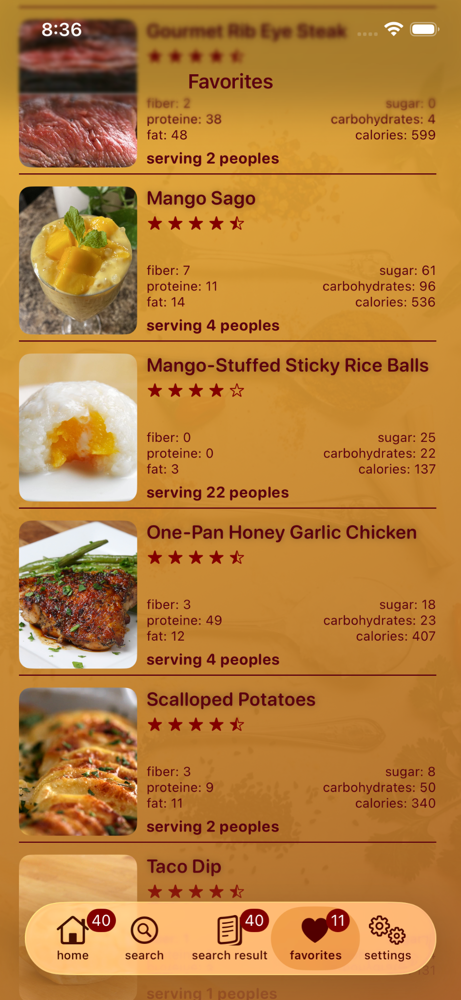

1

Add what you have
Search with ingredients, meals, cuisines and dietary preferences.
My MasterCook starts with the ingredients already in your kitchen. Search smarter, compare recipes, save favorites and keep cooking ideas close at hand.


Instead of choosing a recipe first, My MasterCook lets you begin with the ingredients you already have and discover recipes that fit.
Add ingredients, choose a meal or cuisine, and narrow by dietary preferences. My MasterCook turns everyday ingredients into useful recipe ideas you can actually make.
A focused flow designed around the way people actually decide what to cook.

Search with ingredients, meals, cuisines and dietary preferences.

See ratings, servings and nutrition information before choosing.
Open the recipe and keep the details close while you cook.
Browse inspiration, save favorites and come back to the dishes you want to make again.

My MasterCook is built for everyday cooking: practical searches, useful recipe information, and a simple way to turn what you have into what you want to eat.